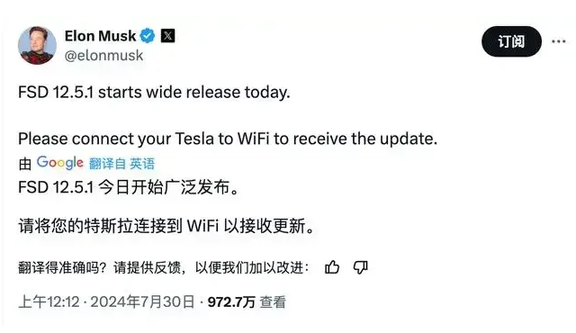

据央视新闻，特斯拉汽车（北京）有限公司、特斯拉（上海）有限公司根据《缺陷汽车产品召回管理条例》和《缺陷汽车产品召回管理条例实施办法》的要求，近日向市场监管总局备案了召回计划：
自即日起，召回生产日期在2020年10月15日至2024年7月17日期间的部分进口Model S、Model X及国产Model 3、Model Y电动汽车，共计1683627辆。
本次召回范围内的部分车辆，在前备箱盖解锁后，前备箱闩锁总成系统可能无法检测到前备箱盖处于解锁状态，车辆无法发出“前备箱未锁紧”的提示，极端情况下可能导致车辆行驶时前备箱盖掀开，影响驾驶员视野，增加车辆发生碰撞的风险，存在安全隐患。
特斯拉汽车（北京）有限公司、特斯拉（上海）有限公司将通过汽车远程升级（OTA）技术为召回范围内的车辆免费升级软件，升级后的车辆可以识别前备箱闩锁的故障状态，并发出“前备箱未锁紧”的文字和蜂鸣提示。同时，对检测发现前备箱闩锁存在故障的车辆进行免费修复，以消除安全隐患。对于无法通过OTA技术升级的车辆，将通过特斯拉服务中心联系相关用户实施召回。
一周前已在美国召回180多万辆车
不到一个月市值蒸发2100亿美元
据中国经济网，道琼斯旗下新闻网站MarketWatch30日报道，美国国家公路交通安全管理局（NHTSA）表示，由于软件无法检测到未上锁的引擎盖，特斯拉将在美国召回180多万辆电动汽车 。
该机构认为，这个软件缺陷可能导致未上锁的引擎盖在驾驶时突然打开，并遮挡驾驶员的视线，从而增加撞车的风险。此次召回涉及2021年至2024年生产的Model 3、Model S、Model X，以及2020年至2024年生产的Model Y车型，受影响的汽车达到184.96万辆。
据悉，特斯拉已发布了一个汽车远程升级软件更新来解决这个问题，受影响车主会在2024年9月22日前收到特斯拉的通知函。
祸不单行的是，自7月11日盘中站上270美元高峰后，近期特斯拉股价震荡走低，当地时间8月6日，特斯拉股价再次下跌，截至完稿报195.36美元，总市值蒸发了超2100亿美元（约合人民币1.5万亿元）。

在此期间，马斯克多次释放信号，似乎试图“押宝”自动驾驶以重振股价。
7月24日，特斯拉发布第二季度财报。数据显示，第二季度特斯拉全球生产了超41万辆电动车，交付超过44.4万辆电动车，环比增长14.7%
图片来源：视觉中国（资料图）
马斯克在财报电话会议上还公布了自动驾驶等业务的进展情况。马斯克表示，将在欧洲和中国申请监管批准，以实施监督下的FSD（完全自动驾驶能力），预计在今年年底前获得批准。此外，特斯拉Robotaxi将于10月10日发布，有可能在今年年底、最迟明年投入使用。
7月30日，马斯克表示，特斯拉开始大范围推广FSD的12.5.1版本。

马斯克在此前的试驾直播中表示，FSD V12版本已能实现“端到端”的人工智能自动驾驶方案。简单地说，该方案把摄像头获取的图像数据输入到算法后，能直接输出例如转向、加速、制动等车辆控制指令，更像是一个人类的大脑，不需要高精地图以及激光雷达，仅依靠图像数据输入就能分析并输出控制策略。此前，特斯拉的自动驾驶系统依赖基于规则的判断，依靠汽车摄像头识别车道、行人、车辆、标志和交通信号灯等，然后通过工程师们编写代码来应对各种情况。
多个车型进入地方政府采购平台
近日，福建省政府采购网上超市网站显示，特斯拉Model Y“TSL6480BEVAR0”车型已进入“采购网上超市”名单。据悉，入围车型为一款后轮驱动版（标准续航版）星空灰色车型。
特斯拉官网显示，该车型官方指导价为24.99万元，CLTC纯电续航为554公里，百公里加速5.9秒，最高车速可达217km/h。
《每日经济新闻》记者发现，此次入围采购名单的特斯拉Model Y被分类在越野车下，该分类还包括奇瑞捷途、大众途昂X、丰田RAV4、红旗新HS5等148款车型。
图片来源：福建省政府采购网上超市
除此以外，特斯拉还进入了云南省政府采购云平台与吉林省政府采购云平台。在云南省政府采购云平台上，特斯拉的入围车型包括Model 3后轮驱动版和Model Y后轮驱动版车型。在吉林省政府采购云平台，特斯拉入围车型为特斯拉Model 3后轮驱动版。
在此前的7月4日，江苏政府采购网披露的《江苏省党政机关、事业单位及团体组织2024-2025年度新能源汽车框架协议采购入围公告(三)》显示，特斯拉Model Y进入江苏省政府新能源用车采购目录，为全国首个特斯拉进入政府采购目录的案例。